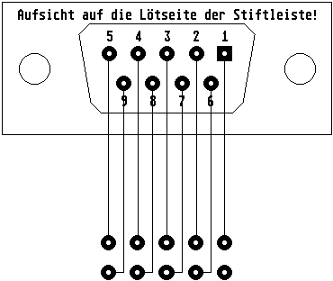

Die Pinbelegung des Seriell 1 Steckers (Mainboardstiftleiste)
1 Not Connected
2 Not Connected
3 Receive Data
4 200 Ohm Pullup gegen +12V
5 Transmit Data Folgende Geschwindigkeiten sind auf
6 Not Connected dieser Schnittstelle möglich:
7 200 Ohm Pullup gegen +12V
8 Not Connected 300,600,1200,1800,2000,2400,3600,4800,
9 Ground 9600, 19200, 38400, 57600, 115200 und
230400 Bit pro Sekunde.

1 Not Connected
2 Receive Data
3 Transmit Data
4 DTR (200 Ohm Pullup)
5 Ground
6 Not Connected
7 RTS (200 Ohm Pullup)
8 Not Connected
9 Not Connected
Die Belegung des Flachbandkabels zwischen Quetschbuchse und 9 pol
Dsub Stiftleiste.

Kapitel Die Pinbelegung des Seriell 1 Steckers, Seite 1